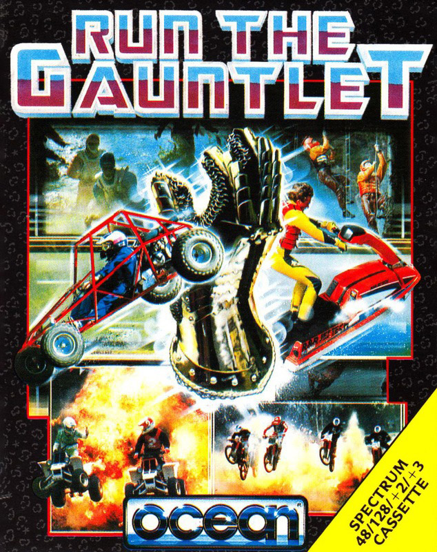
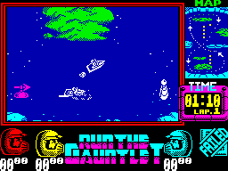
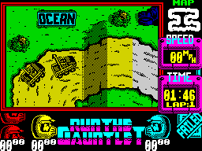
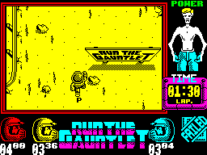

Run the Gauntlet


{kind=link}

| Publisher: | Ocean |
| Price: | £8.99 Cass, 14.99 Disk |
| Year: | 1989 |
| Source: | CRASH, Issue 62 |

Hi, I’m Martin Shaw, and I’m standing here looking sickeningly fit and healthy waiting to take you through the many gruelling courses that make up Run The Gauntlet. The challenge is divided into three events, each made up of three segments (picked at random on the +3) which can be Road Racing, Water Racing or The Hill assault course — all are separate loads. For the waterborne race there’s hovercraft, speed boats, jet skies, and inflatable boats. These all have their own handling characteristics and also their own particular race course. For the muddy track races there’s two-man buggies, one-man buggies, four-wheel bikes and amphibious six-wheeled vehicles. There are two courses for these machines. And as for the assault courses... I’m afraid you have to use your own legs for the two different layouts.
Four teams can take part in the challenge, three of which can be human while one is always a computer pacer. If more than one human is taking part, game segments are repeated to allow the additional player(s) to have a go as well.

The waterborne race is presented in overhead, smoothly-scrolling fashion. It looks easy but the characteristics of the vehicles are tricky, collisions with other vehicles or land leads to spins, and there’s some attractive explosions to throw you off course. Left/right controls direction and forward/reverse controls speed. A map shows your position and you obviously must stick to the course.
Similar controls and a mini-map insert are carried through to track racing. However, the view of the course is flickscreen and more angled. The map is useful to anticipate bends and hills, while explosions again prove to be a nasty hazard. Probably the most graphically attractive section this is also the most fun to play.

The toughest section, however, is The Hill. Here the view is again overhead and smooth-scrolling, but totally monochromatic one. The course includes muddy pits, slippery logs over water, nets and water cannons sweeping over the course to try and knock you over. Pressing left/right controls direction, fire and up makes you jump, while left/right with fire increases power (how fast you run). But if you fall In the water or mud you have to time left/right actions so that you establish a swaying rhythm to move forward.
The variety of events, and the assault course in particular, is suggestive of Combat School. In terms of graphics the new game is better in places, the race track is really good, but the water course is a bit primitive looking. My problem with the game, though, lay with the controls which really took some mastering, especially with all the different vehicles. This may add to the long term playability, but in the limited time we had to play the game it was frustrating. The multiload is also irritating unless you have a +3. Still there’s a heckuva lot of game here for your money and I’m certainly going to keep playing until I can go through the race track without crashing too much.
MARK ... 85%
SHAW TO WIN

- On the track section, avoid contact with other vehicles at all costs — be patient and wait for an opportunity to overtake.
- Before racing on the water, memorise the course from the map.
- Don’t play with a joystick, it’s too awkward — use the keyboard instead.
- Anticipate corners on the track and take the inside line around them.
- Explosions tend to occur in the middle of the track, so keep to the side.
- When crossing logs on The Hill, account for the water coming from the water cannons — move against it.
- Also on The Hill, try to avoid the water pools which slow you down.
I must confess to only having watched the TV show a couple of times — I preferred the similar Superchamps on Channel 4 — but this game is making me a fan. All the events are here, and well implemented too. I especially like the buggies as they zoom over hills and swerve round corners. The graphics in all events are fine, even though the water sections look (and play) just like Code Masters’ Jetbike Simulator. Then there’s that great 128K ingame tune. But apart from technical excellence, it’s the sheer range of playable sections that make Run The Gauntlet one of the best multi-event games for a long time.
PHIL ... 90%
Cor, wow, blimey! It’s that ace telly program come to my Spectrum, and what a brill game it makes too. All the action, thrills and spills of controlling vehicles like jet skis, supercats and speed boats have been excellently captured by Ocean. Each section has detailed vehicles and backgrounds, while colour is restricted to the borders, livening things up but remaining colour-clash free. Aural colour is provided by the catchy Run The Gauntlet tune, spurring the players on to get a better time, but unfortunately there are no sound effects. My only real quibble, though, is the small matter of the explosions, I thought they were only TV special FX. But if you get stuck over one in the game it blows you back into the last screen. This is an excellent game, so go and Run The Gauntlet, NOW!
NICK ... 92%
THE ESSENTIALS
| Joysticks: | Cheetah Special, Cursor, Kempston, Sinclair |
| Graphics: | Mainly monochromatic, overhead view |
| Sound: | Good, continuous ingame theme |
| Options: | Up to three players, choice of country |
| General rating: | An excellent Spectrum version of the adrenalin-pumping TV series |
| Presentation: | 92% |
| Graphics: | 88% |
| Sound: | 90% |
| Getting started: | 89% |
| Addictive qualities: | 90% |
| Overall: | 90% |